Weak measurement tomography
Jonathan Gross, Ninnat Dangniam, Chris Ferrie, Carl Caves
Center for Quantum Information and Control, University of New Mexico

Tomography
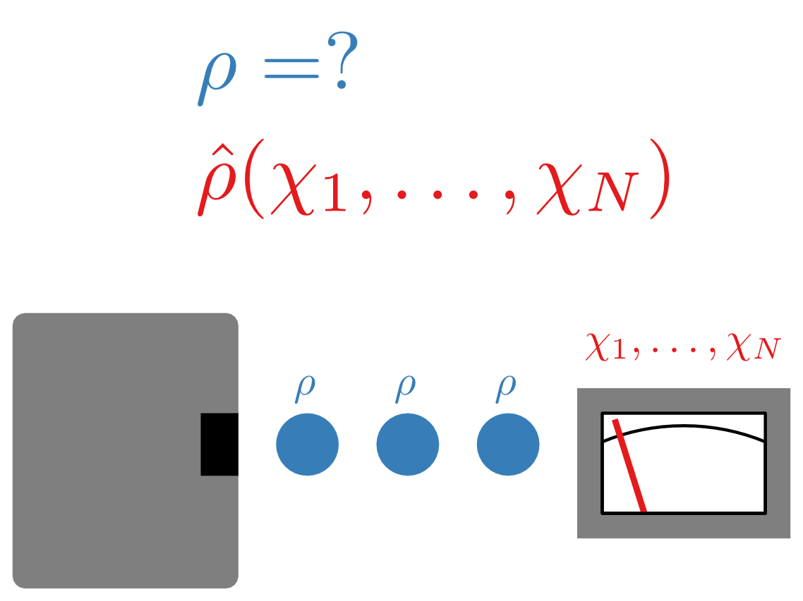- Repeat measurement on each copy
- Adapt measurement based on previous outcomes
- Perform joint measurements
Weak measurements
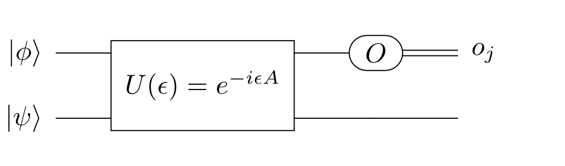- Measurements that give less than maximal information about the system
- Can model with an ancilla and weakly correlating unitary
Random projective measurements
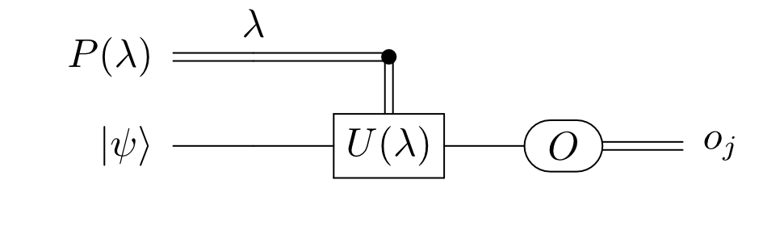Minimal kind of standard
measurement for tomography is a randomly chosen one-dimensional projective measurement (random ODOP)
Standard reasons for doing tomography with weak measurements
- Many real measurements are weak
- Weak measurements are a resource for performing exotic measurements
- Oreshkov and Brun, Phys. Rev. Lett. 95, 110409 (2005)
Weak measurements are universal
- Oreshkov and Brun, Phys. Rev. Lett. 95, 110409 (2005)
Less standard reasons for doing tomography with weak measurements
- Weak measurements provide a fundamentally new way of doing tomography
- Weak measurements allow you to do tomography better than non-weak measurements
- Weak measurements give new insights into the fundamentals of quantum mechanics
Evaluation principles
- Write down POVMs
- Compare to randomly chosen one-dimensional orthogonal projective measurement (random ODOP)
- Compare measurements using optimal estimator for a figure of merit (FOM)
- Use average fidelity as the FOM:
Two schemes considered in this talk
- Das and Arvind, Phys. Rev. A 89, 062121 (2014)
Estimation of quantum states by weak and projective measurements - Lundeen et al., Nature 474, 188–191 (2011)
Direct measurement of the quantum wavefunction
Das and Arvind
Das and Arvind, Phys. Rev. A 89, 062121 (2014)
Estimation of quantum states by weak and projective measurements
Claims:
- The measurement is something new beyond
standard
tomography - The measurement performs better than
standard
tomography- The measurement they compare to is a measurement of , , and , which is a random ODOP
- The insight is that weak measurements allow re-use of the system due to the small disturbance
Weak coupling
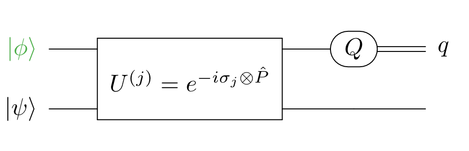 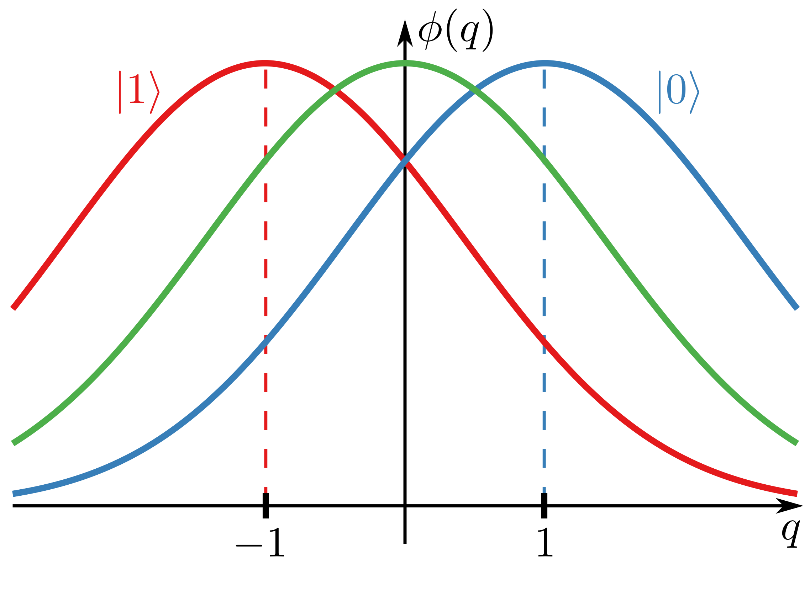Analysis
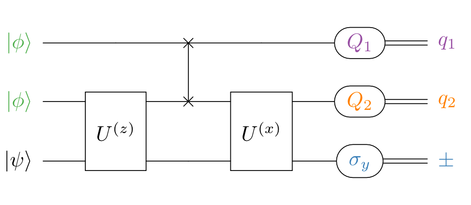Two perspectives:
- The weak measurements extract data prior to the projection
- The weak measurements modify the final measurement
POVM elements
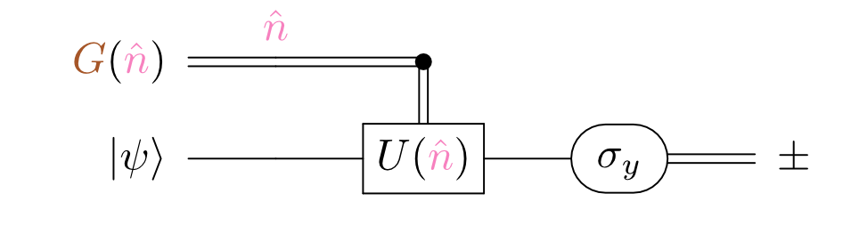Equally weighted, orthogonal projectors: ,
Projection onto the q-plane
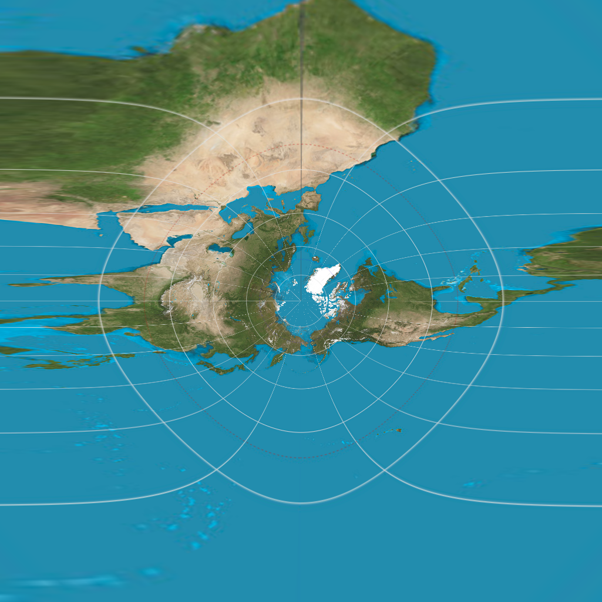Original image: "Equirectangular projection SW" by Strebe - Own work. Licensed under CC BY-SA 3.0 via Wikimedia Commons.
{kind=link}
Q-plane distributions
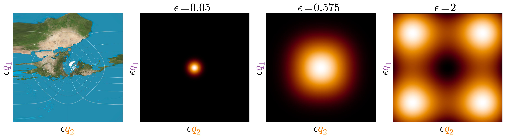Bloch sphere distributions
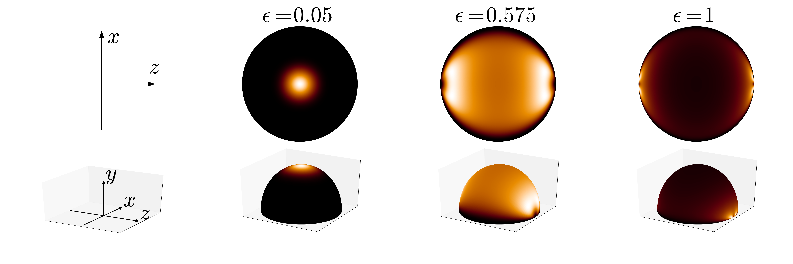Evaluation
The proposal has several problems:
-
The measurement is not new
- POVM is a random ODOP (i.e.
standard
tomography)
- POVM is a random ODOP (i.e.
-
The measurement is not better
- Best measurement is projector sampled from Haar uniform distribution (random ODOP)
-
The insight is misleading
- Extra weak measurements don't extract more information, they generate a distribution
Direct state tomography (DST)
Lundeen et al., Nature 474, 188–191 (2011)
Direct measurement of the quantum wavefunction
Claims:
- The measurement uses a new technique inspired by weak-value procedures
- Simplicity of measurement makes it better for some systems
- The relationship between meter readings and probability amplitudes provides insight for the interpretation of the wavefunction
Direct state tomography (DST)
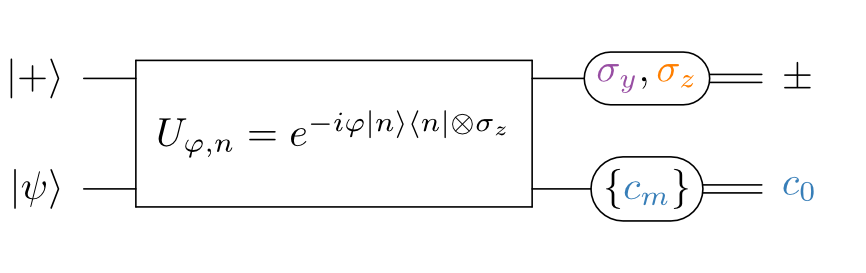Maccone and Rusconi, Phys. Rev. A 89, 022122 (2014)
State estimation: A comparison between direct state measurement and tomography
Postselection throws away information
Z-measurement (imaginary part)
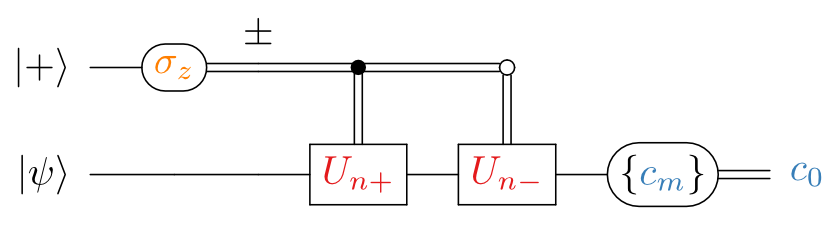Measurement commutes with control
Y-measurement (real part) for qubits
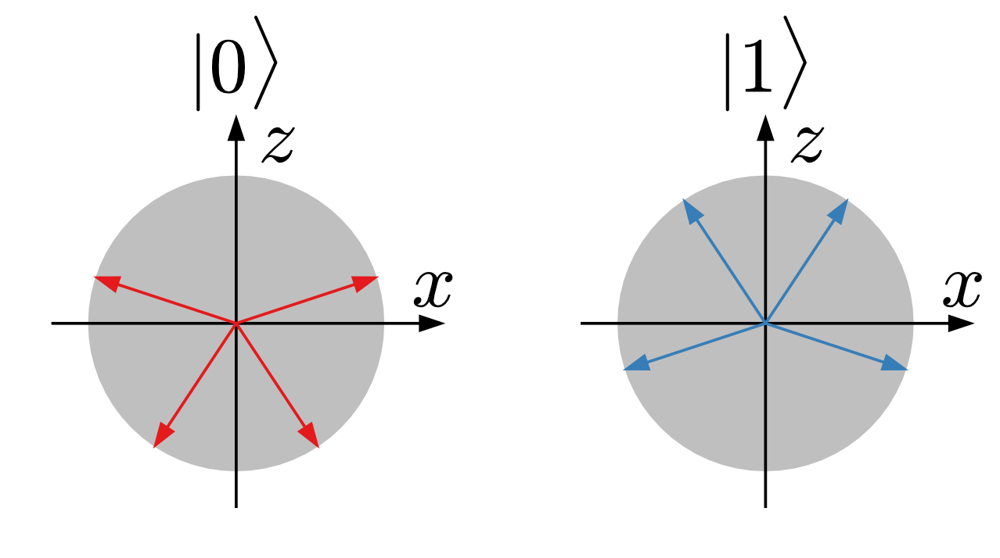POVMs for different coupling unitaries are not random ODOPs (for fixed )
Y-measurement (real part) for qubits
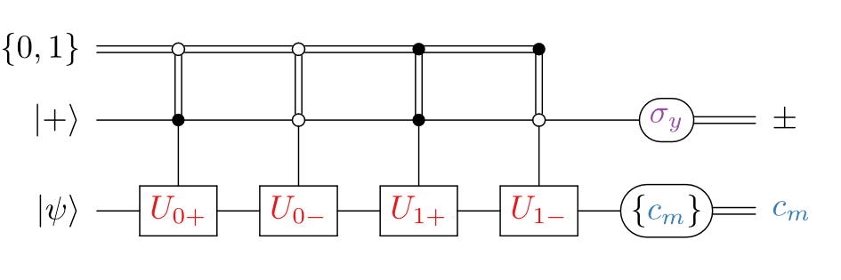 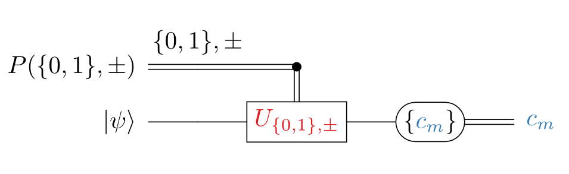If we only consider reconstructing qubits, flipping a coin to choose between and yields a POVM that is a random ODOP
Evaluation
-
The weak-value-inspired procedure is only new for the real parts in dimensions higher than 2
- All other measurements are random ODOPs
-
It is not better than the same scheme without postselection
- Eliminating postselection does not change experimental setup and leaves postprocessing virtually unchanged
- The insight is misleading since real and imaginary components cannot be determined until all measurements are made
Summary
- Random ODOPs already exhibit much of the
new
behavior seen in weak measurements - For average fidelity, the best independent measurement is a random ODOP
- For tomography in general, the best thing to do is keep all the data
- Many of the insights of weak measurements have caveats that become clear when analyzed at the level of POVMs
/